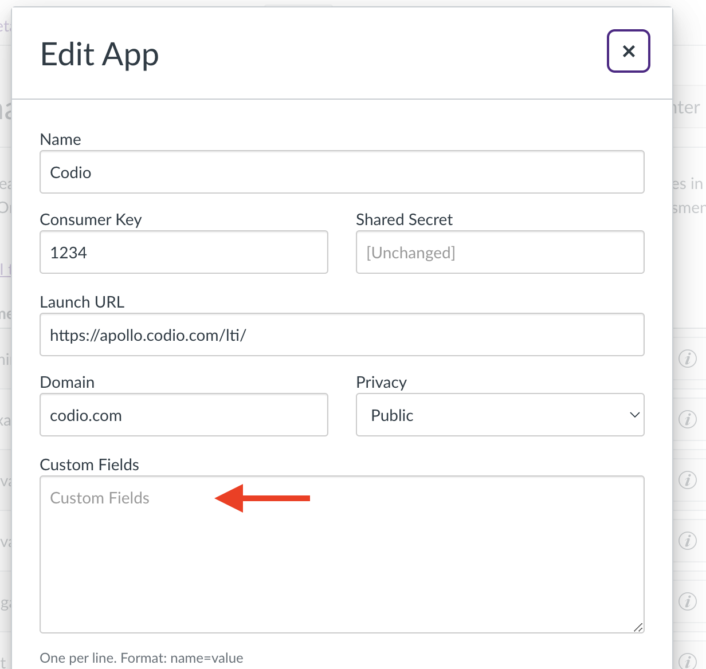
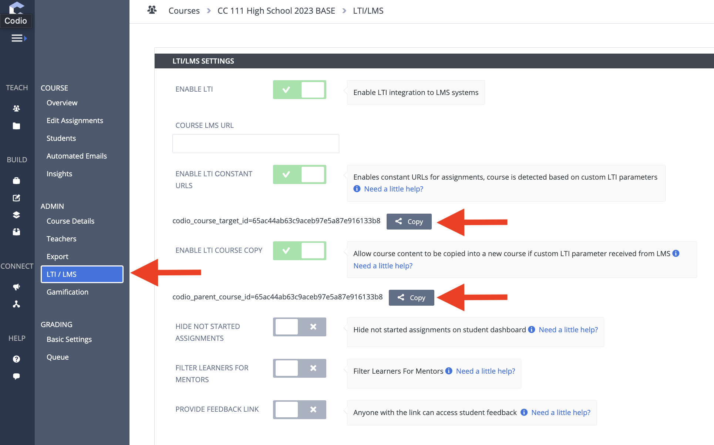

Once you have the Canvas course connected to the Codio Organization, you can connect the Canvas course to the Codio Course.
As with the connection to the Codio organization, you will edit the Codio app configurations in Canvas.

This step only requires that you update the “Custom Fields”

The particular field gets two values from Codio: “codio_course_target_id” and “codio_parent_course_id”. To get these, open the Codio course and select “LTI/LMS”. Copy these two fields and paste them into the Canvas “Custom Fields”, one per line.

Tip
When we clone the course, we will refer to these values again.